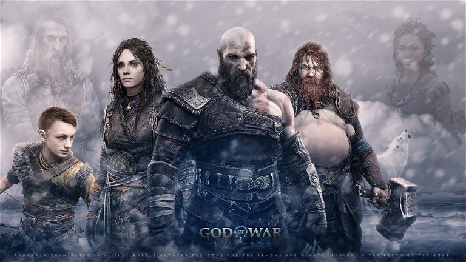
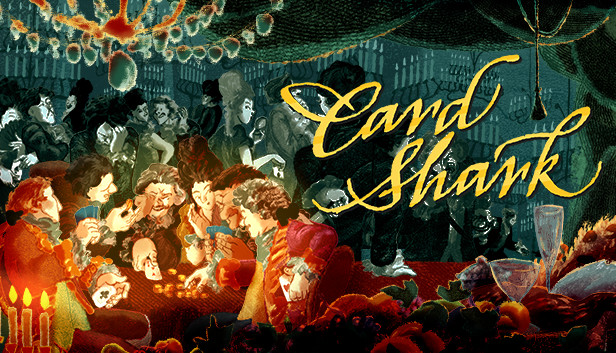

Los juegos más exitosos
Elden Ring fue sin duda uno de los juegos más esperados por los fanáticos, tanto así que desde su salida el 25 de febrero, se colocó como uno de los juegos más jugadas e incluso ganándose el premio ded Juego del Año en los Game Awards.Álzate, Sinluz, y que la gracia te guíe para abrazar el poder del Círculo de Elden y encumbrarte como señor del Círculo en las Tierras Intermedias.

La nueva aventura de Kratos y Atreus, que cierra la saga nórdica de God of War, ha resultado estar a la altura de sus expectativas, logrando incluso mejorar a la entrega predecesora. God of War: Ragnarok se ha convertido desde ya en el mejor juego de la saga de PlayStation y Santa Monica Studio, brindándonos un viaje con unos valores narrativos exquisitos en el que no faltan grandes y épicos combates, ingeniosos puzles, multitud de secretos y una trabajadísimo contenido secundario.
Uno de los indiscutibles juegos indies del año es esta pasmosa mezcla de puzles, juego de habilidad, minijuegos y ambientación deliciosamente histórica, que nos pone en la piel de un aprendiz de tahúr que llega hasta el mismísimo Versalles desplumando lechuguinos. Auténticas trampas en el juego son la clave de este paseo histórico por las maldades de las apuestas, en un juego lleno de humor y asombrosos datos reales, y con un grafismo tan único como apropiado.
